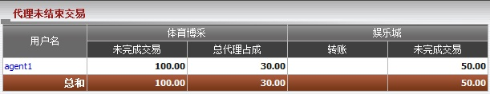
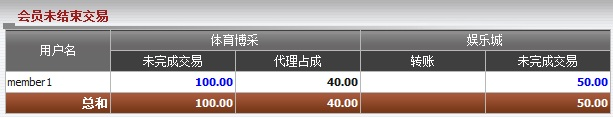
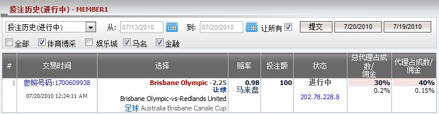
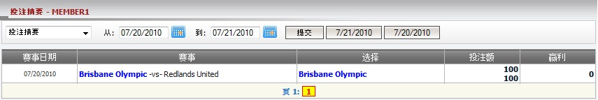
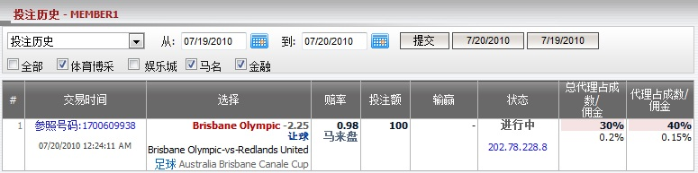
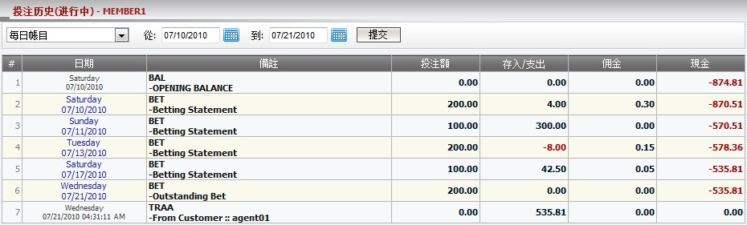

代理未结束交易
定义:
这份报告显示会员于尚在进行中的注单的总投注额及总代理基于占成数的共享数额。

图 1.1
用词注解:
-
未完成交易: 合计所有会员尚在进行中注单的投注额。
- 总代理占成: 总代理基于占成数所得到的共享数额。
- 娱乐城转账: 会员转移到娱乐城的数额。
- 娱乐城未完成交易: 娱乐城进行中游戏的未完成余额 (此数值只出现在会员将金额调回IBC)。
您可点击代理用户名, 以查询会员未完成交易及代理对于进行中注单的共享数额 (图 1.2)。

图 1.2
用词注解:
-
未完成交易: 合计所有会员尚在进行中注单的投注额。
- 代理占成: 代理基于占成数所得的数额。
如何理解报告:
在此报告, member1 投注于赛事 布里斯班奥林匹克 -vs- 红土联队, 投注额 = 100, 赔率 = 0.98, 状态 = 进行中, 总代理占成 = 30% 和代理占成 = 40%。 此外, 此会员也从体育博彩调动1,000至娱乐城进行游戏, 并留下投注额 = 50的待续娱乐城游戏。
我们有结果显示在图1.1和图1.2:
- 会员未完成交易 = 投注额 * 赔率 = 100 * 1 = 100.
- 代理占成 = 未完成交易 * 代理占成 = 100 * 40% = 40.
- 总代理占成 = 未完成交易 * 总代理占成 = 100 * 30% = 30.
- 娱乐城未完成交易 = 50.
要深入了解这些进行中的注单, 点击未完成交易数额查看投注历史 (进行中) (图1.3)。在进行中的注单页面, 您也能够查看:
1. 投注历史(进行中):

图 1.3
2. 投注摘要:
- 这个列表包含根据投注类别的所有注单: member1投注于亚洲盘, 单双, 大小盘, 上半场亚洲盘, 上半场大小盘, 这份报告根据赛事及交易时间分类。

图 1.4
3. 投注历史:
- 这个列表包含member1所有注单包括已结算及进行中的注单。

图 1.5
4. 每日账目:
- 这份报告总结了所有的交易, 然后投入每日记录在案。每日记录余额为总结当前日期的最新余额。

图 1.6
在上图中, member1至07/09/2010 星期五的输赢总额将被总结并显示为07/10/2010 星期六的期初余额。
用词注解
- Bal-Opening balance: 总计所有输赢及转账交易至期初余额日期之前。
- Bet-Betting statement: 總計有輸贏的所有投注。
- Traa-From Customer: 为了付款目的的转账数额。
- Bet-Outstanding Bet: 总计所有尚在进行中的投注。
- Credit/debit: 输赢数额或转账数额。
- Commission: 代理佣金。
如何理解报告
上方的每日账目显示以下细节:
-
星期六 07/10/2010, 为期初余额日, Member1至该日的总余额为 -874.81.
-
星期六 07/10/2010, Member1 投注 200, 赢额 4, 得到 0.3 的佣金额然后他/她的余额 = -874.81 + 4 + 0.3= -870.51.
-
星期日 07/11/2010, Member1 投注 100, 赢额 300, 得到 0 的佣金所以他/她的余额 = -870.51 + 300 + 0 = -570.51.
-
星期二 07/13/2010, 投注 200, 输额 8, 得到 0.15 的佣金所以他/她的余额 = -570.51 - 8 + 0.15 = -578.36.
-
星期六 07/17/2010, 投注 100, 赢额 42.5, 得到 0.05 的佣金所以他/她的余额 = -578.36 + 42.5 + 0.05 = -535.81.
- 星期三 07/21/2010, Member1 投注 200 而这些注单仍在进行中, 所以他的余额还是 -535.81.
- 星期三 07/21/2010, agent01 转账 535.81 到 member1, 所以他/她的最新余额 = -535.81 + 535.81 = 0.